UNIDAD I: ANÁLISIS SEMÁNTICO
El análisis semántico es el "cerebro" del compilador: es donde se decide si el código, aunque esté bien escrito en sintaxis, realmente tiene sentido lógico.
1.1 Árboles de expresiones
Un árbol de expresiones es una estructura jerárquica que representa la lógica de una operación matemática o lógica. En esta estructura, los operandos siempre son las hojas y los operadores son los nodos internos.
Importancia: Permite al compilador evaluar operaciones respetando la jerarquía y es la base para generar el código de máquina final.
Detalle técnico: Generalmente se recorre en postorden (Izquierda, Derecha, Raíz) para realizar cálculos.
Ejemplo: Para x = (a + b) * (c - 5):
- Se crea un nodo
+con hijosayb. - Se crea un nodo
-con hijoscy5. - Se crea un nodo
*que une ambos resultados. - La raíz es
=que asigna el resultado ax.
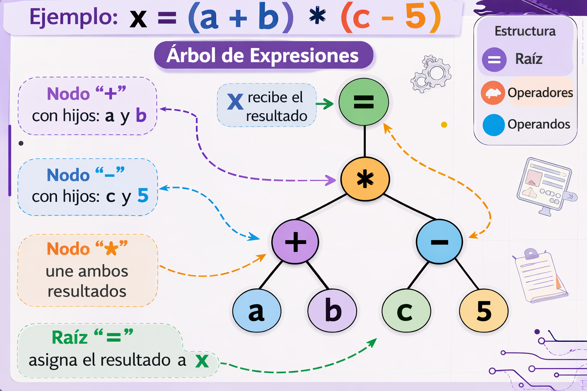
1.2 Acciones semánticas de un analizador sintáctico
Son pequeñas rutinas o funciones que se insertan directamente en las reglas de la gramática. Cuando el analizador sintáctico reconoce una estructura legal, dispara esta acción.
Importancia: Es el puente entre el reconocimiento del texto y la ejecución de lógica.
Funciones comunes: Insertar datos en la tabla de símbolos, verificar tipos o generar código intermedio.
DECLARACION -> TIPO ID ;
{ TablaSimbolos.insertar(ID.nombre, TIPO.tipo); }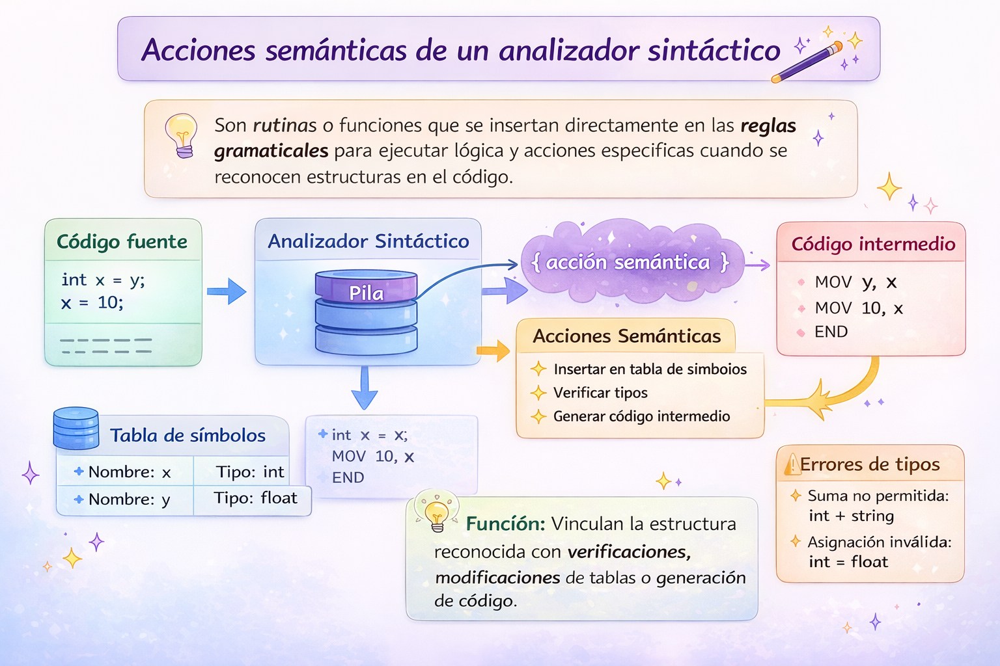
1.3 Comprobaciones de tipos en expresiones
Es el conjunto de reglas que asegura que los operadores se usen con los datos correctos. El sistema de tipos puede ser estático o dinámico.
Importancia: Evita errores graves, como intentar multiplicar un número por una cadena.
Coerción: A veces se permite mezclar tipos si puede hacerse una conversión automática.
Ejemplo: Si declaras int a = 10; y luego intentas hacer
a = "Hola";, se marcará un error semántico.
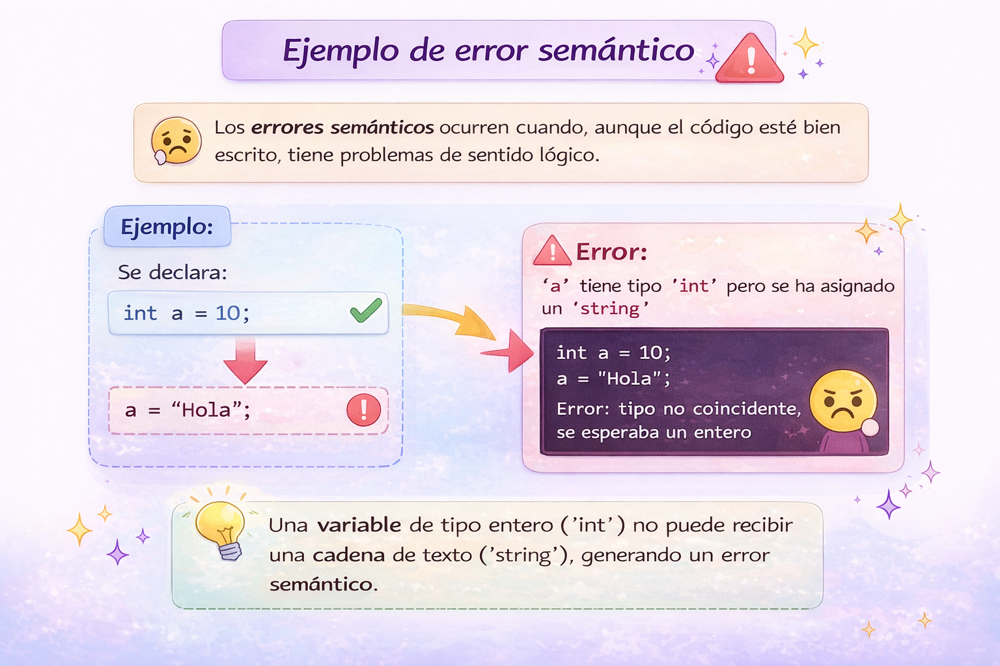
1.4 Pila semántica en un analizador sintáctico
Es una estructura auxiliar tipo LIFO que guarda temporalmente la información de los nodos procesados, especialmente en analizadores ascendentes.
Importancia: Permite mantener el rastro de valores y tipos de las subexpresiones.
Funcionamiento: En un shift se mete información a la pila; en un reduce se sacan los datos para aplicar la regla.
Ejemplo: Al procesar 2 + 3, la pila recibe 2, luego 3, y después
devuelve 5.
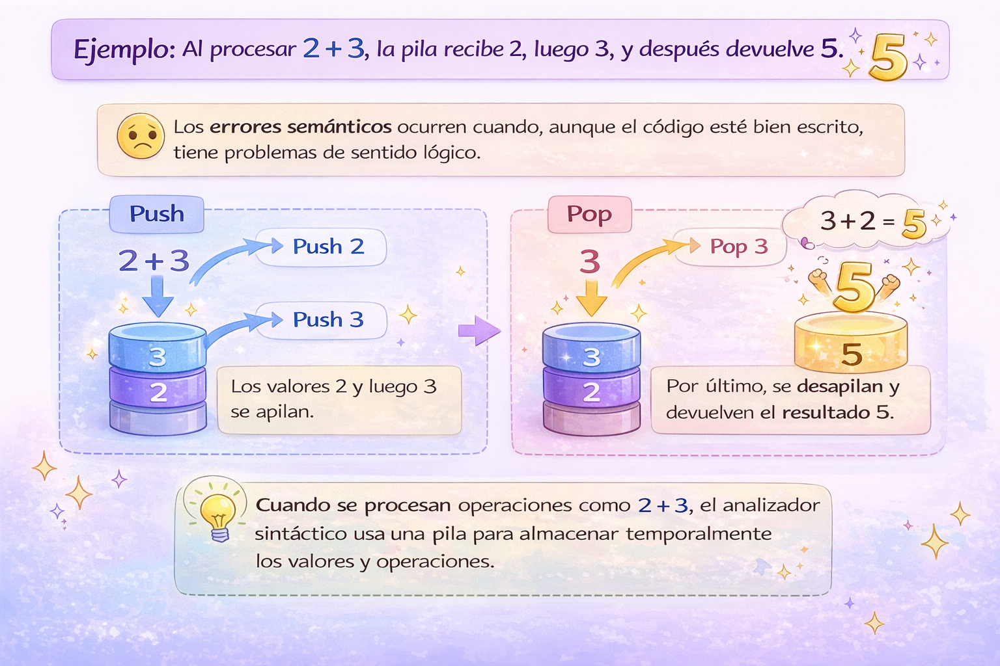
1.5 Esquema de traducción
Es una notación formal que combina gramática, acciones semánticas y atributos. Define cómo fluye la información a través del árbol sintáctico.
Atributos sintetizados: El valor del padre se calcula a partir de los hijos.
Atributos heredados: El valor depende del padre o de los hermanos.
Ejemplo: En LISTA_VARS -> ID , LISTA_VARS, el tipo de dato se hereda
hacia los identificadores de la lista.
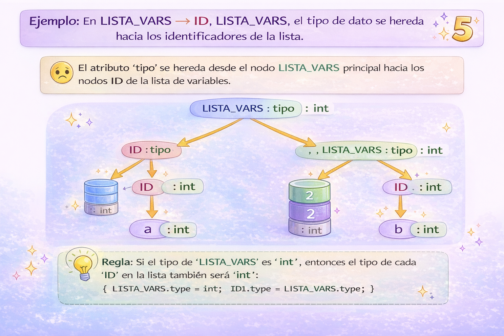
1.6 Generación de la tabla de símbolos y tabla de direcciones
Estas tablas son el diccionario del programa durante la compilación.
Tabla de símbolos: Guarda nombre, tipo, ámbito y visibilidad.
Tabla de direcciones: Calcula el desplazamiento de memoria de cada dato.
Ejemplo: Si defines una variable global int x, se registra su tipo,
alcance y dirección de memoria.
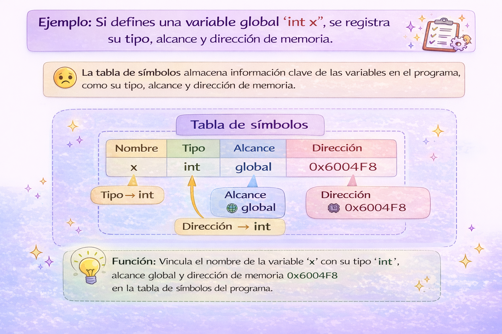
1.7 Manejo de errores semánticos
Un error semántico ocurre cuando el código es correcto gramaticalmente, pero no tiene sentido lógico dentro del lenguaje.
Errores comunes:
- Variables no declaradas.
- Funciones con argumentos incorrectos.
- Uso de variables fuera de su ámbito.
- División por cero cuando es constante.
Estrategia de recuperación: El compilador debe seguir analizando para reportar varios errores y no detenerse en el primero.
Ejemplo: int x = suma(5); sería error si suma necesita dos
parámetros.
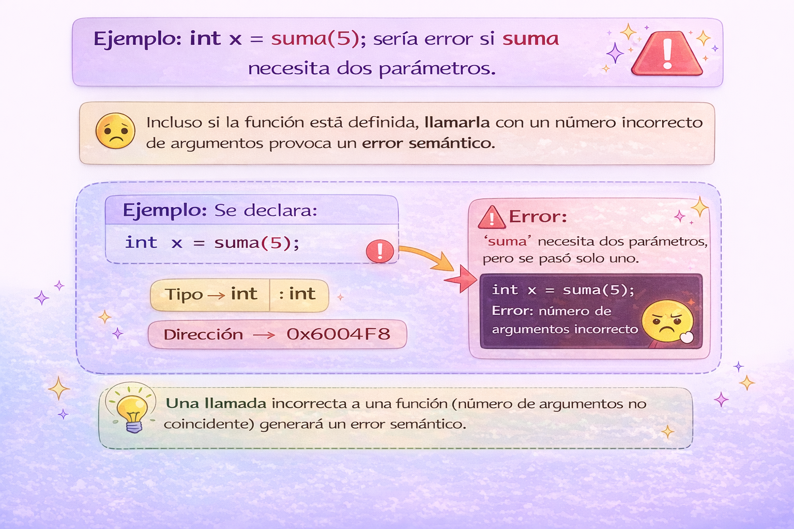
UNIDAD II: GENERACIÓN DE CÓDIGO INTERMEDIO
La generación de código intermedio transforma el programa fuente en una forma más simple, organizada y fácil de procesar antes de convertirlo en código máquina.
2.1 Notaciones
Las notaciones son diferentes maneras de representar expresiones matemáticas o lógicas. En compiladores se usan para facilitar la traducción y evaluación de expresiones.
2.1.1 Prefija
En la notación prefija, el operador se coloca antes de los operandos.
Ejemplo: + a b
Ventaja: reduce ambigüedades y facilita el análisis.
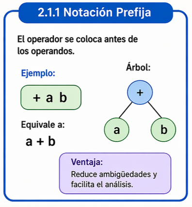
2.1.2 Infija
Es la forma tradicional de escribir expresiones, colocando el operador entre los operandos.
Ejemplo: a + b
Importancia: es la notación más comprensible para las personas.
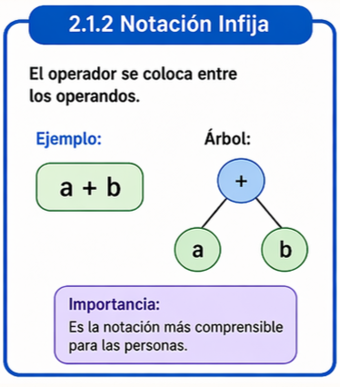
2.1.3 Postfija
En la notación postfija, el operador se coloca después de los operandos.
Ejemplo: a b +
Importancia: es muy útil para trabajar con pilas.
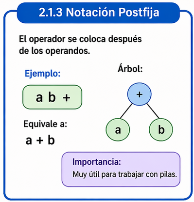
2.2 Representaciones de código intermedio
El código intermedio puede representarse de distintas formas, dependiendo de cómo se quiera organizar la información antes de generar el código final.
2.2.1 Notación Polaca
Es una notación donde el operador va antes de los operandos.
Ejemplo: * + a b c
Ventaja: elimina el uso de paréntesis.
2.2.2 Código P
El código P es una representación intermedia diseñada para una máquina abstracta o virtual.
LOD a
LOD b
ADI
STO x2.2.3 Triplos
Los triplos representan operaciones mediante tres elementos: operador, argumento 1 y argumento 2.
Ventaja: permiten manejar resultados temporales sin nombrarlos explícitamente.
2.2.4 Cuádruplos
Los cuádruplos guardan operador, argumento 1, argumento 2 y resultado.
Ejemplo: (+, a, b, t1)
Importancia: facilitan la optimización y generación de código.
2.3 Esquema de generación
Define cómo las estructuras del programa fuente se traducen a instrucciones intermedias.
2.3.1 Variables y constantes
Las variables y constantes deben registrarse correctamente para poder ser usadas durante la traducción del programa.
2.3.2 Expresiones
Las expresiones se descomponen en operaciones simples usando variables temporales.
t1 = b * c
t2 = a + t12.3.3 Instrucción de asignación
La asignación guarda el valor de una expresión dentro de una variable.
Ejemplo: x = a + b
2.3.4 Instrucciones de control
Estructuras como if, while y for
controlan el flujo de ejecución del programa.
if a < b goto L1
goto L22.3.5 Funciones
Las funciones permiten reutilizar bloques de código y organizar mejor un programa.
2.3.6 Estructuras
Las estructuras agrupan varios datos relacionados dentro de una misma entidad.
Ejemplo: alumno.edad
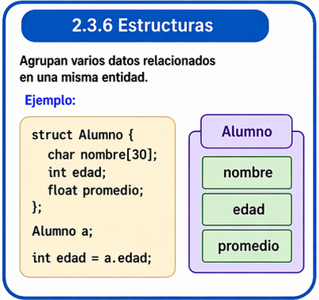
UNIDAD III: OPTIMIZACIÓN
La optimización es la fase del compilador que mejora el código para hacerlo más eficiente, rápido y con menor consumo de recursos, sin cambiar su resultado.
3.1 Tipos de optimización
Existen diferentes tipos de optimización según el alcance y el tipo de mejora que se desea aplicar dentro del programa.
3.1.1 Locales
Se aplican dentro de un bloque básico de instrucciones.
Ejemplo: eliminar operaciones redundantes.
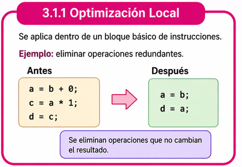
3.1.2 Ciclos
Mejoran el rendimiento dentro de estructuras repetitivas como bucles.
Ejemplo: mover cálculos invariantes fuera del ciclo.
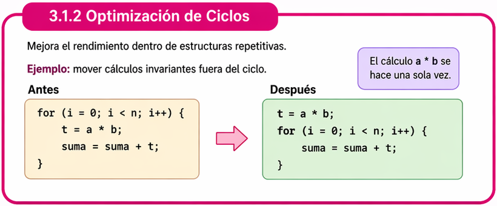
3.1.3 Globales
Se aplican en distintas partes del programa, no solo en un bloque aislado.
Ejemplo: propagación de constantes o eliminación de código muerto.
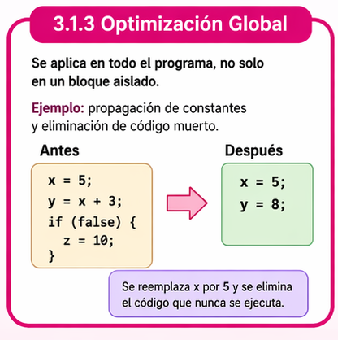
3.1.4 De mirilla
Analiza pequeñas secuencias de instrucciones para sustituirlas por otras más eficientes.
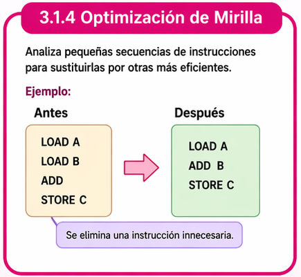
3.2 Costos
Optimizar implica también disminuir costos de ejecución y uso de recursos.
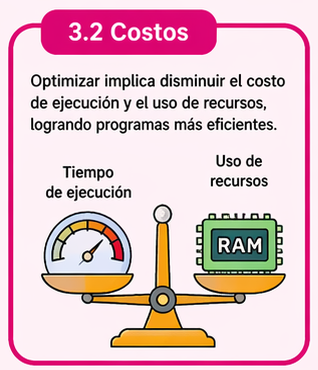
3.2.1 Costo de ejecución (memoria, registros, pilas)
Considera los recursos que utiliza un programa para ejecutarse.
- Memoria: espacio utilizado por datos y estructuras.
- Registros: almacenamiento rápido del procesador.
- Pilas: soporte para llamadas a funciones y variables locales.
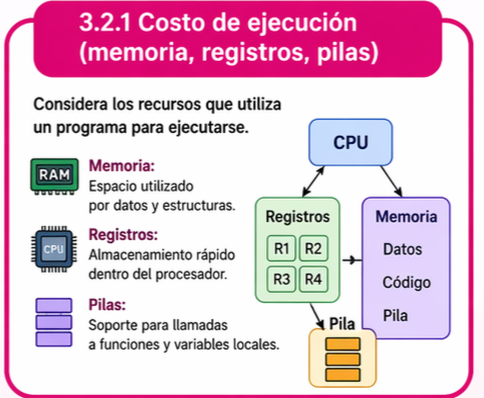
3.2.2 Criterios para mejorar el código
Para mejorar el código se analizan criterios como velocidad, tamaño y uso eficiente de memoria o registros.
- Reducir tiempo de ejecución.
- Eliminar instrucciones innecesarias.
- Disminuir uso de memoria.
- Aprovechar mejor los registros.
3.2.3 Herramientas para el análisis del flujo de datos
El análisis del flujo de datos estudia cómo se generan, modifican y usan los valores dentro del programa.
Importancia: permite encontrar oportunidades de optimización como código muerto o expresiones repetidas.
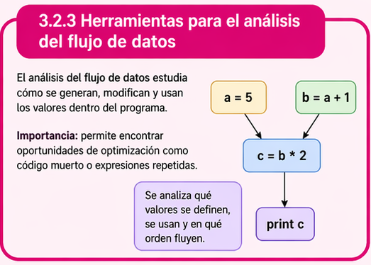
UNIDAD IV: GENERACIÓN DE CÓDIGO OBJETO
La generación de código objeto es la fase donde el compilador transforma el código intermedio en instrucciones más cercanas al hardware, listas para ser ensambladas o ejecutadas por la máquina.
4.1 Registros
Los registros son pequeñas unidades de almacenamiento dentro del procesador que permiten guardar datos temporalmente durante la ejecución de instrucciones.
Importancia: Son mucho más rápidos que la memoria principal y mejoran el rendimiento del programa.
Uso en compiladores: el compilador intenta asignar variables frecuentes a registros para acelerar operaciones.
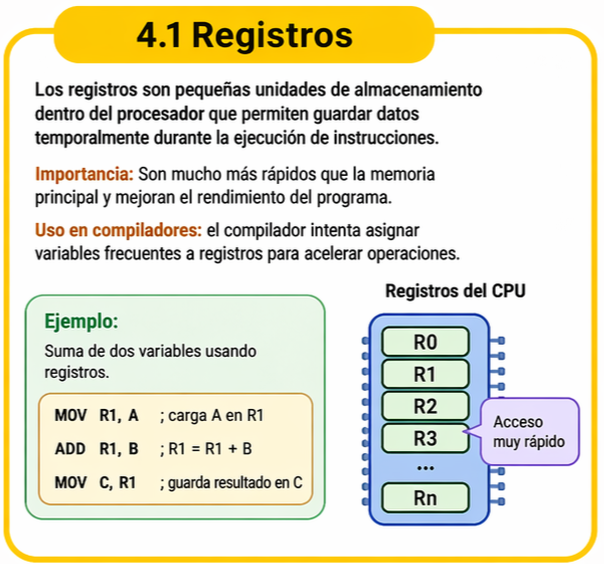
4.2 Lenguaje ensamblador
El lenguaje ensamblador es una representación simbólica de las instrucciones de máquina. Cada instrucción en ensamblador corresponde casi directamente con una instrucción del procesador.
Importancia: permite un control muy preciso del hardware y sirve como paso intermedio antes del código máquina.
MOV AX, 5
ADD AX, 3
MOV X, AX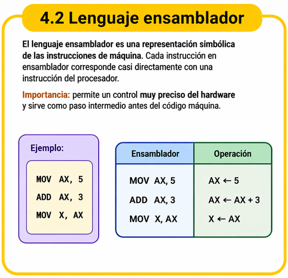
4.3 Lenguaje máquina
El lenguaje máquina es el conjunto de instrucciones en formato binario que el procesador puede ejecutar directamente.
Características: está formado por ceros y unos, y depende totalmente de la arquitectura de la computadora.
Importancia: es el resultado final de la compilación antes de la ejecución.
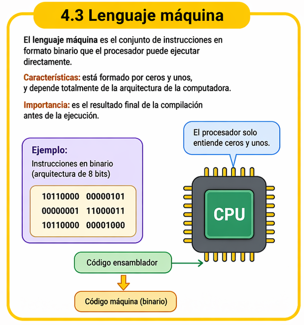
4.4 Administración de memoria
La administración de memoria consiste en organizar y controlar cómo se almacenan los datos y programas en la memoria principal.
Importancia: permite usar de forma eficiente el espacio disponible y evitar errores como accesos inválidos.
En compiladores: se relaciona con la asignación de direcciones, variables locales, globales, pilas y segmentos de memoria.
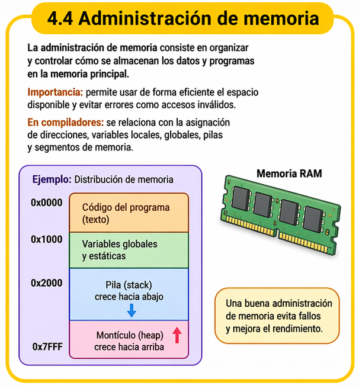